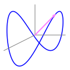
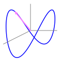
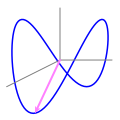

What is a vector-valued function? What do we mean by the graph of a vector-valued function?
What is a parameterization of a curve in \(\R^2\text{?}\) In \(\R^3\text{?}\) What can the parameterization of a curve tell us?
So far, we have seen several different examples of curves in space, including traces and contours of functions of two variables, as well as lines in 3-space. Recall that for a line through a fixed point \(\vr_0\) in the direction of vector \(\vv\text{,}\) we may express the line parametrically through the single vector equation
From this perspective, the vector \(\vr(t)\) is a function that depends on the parameter \(t\text{,}\) and the terminal points of this vector trace out the line in space.
Like lines, other curves in space are one-dimensional objects, and thus we aspire to similarly express the coordinates of points on a given curve in terms of a single variable. Vectors are a perfect vehicle for doing so — we can use vectors based at the origin to identify points in space, and connect the terminal points of these vectors to draw a curve in space. This approach will allow us to draw an incredible variety of graphs in 2- and 3-space, as well as to identify and describe curves in \(n\)-space for any \(n\text{.}\) It will also allow us to represent traces and cross sections of surfaces in space.
Preview Activity9.6.1.
In this activity we consider how we might use vectors to define a curve in space.
On a single set of axes in \(\R^2\text{,}\) draw the vectors
Based on the pictures from parts (a) and (b), sketch the set of terminal points of all of the vectors of the form \(\langle \cos(t), \sin(t) \rangle\text{,}\) where \(t\) assumes values from 0 to \(2 \pi\text{.}\) What is the resulting figure? Why?
Suppose we sketched the terminal points of all vectors of the form \(\langle \cos(t), \sin(t) \rangle\text{,}\) where \(t\) assumes values from 0 to \(\pi\text{.}\) How does the resulting picture differ from the one in part (c)? What about for \(t\) from 0 to \(4 \pi\text{?}\)
Subsection9.6.1Vector-Valued Functions
Consider the curve shown in Figure 9.6.1. As in Preview Activity 9.6.1, we can think of a point on this curve as resulting from a vector from the origin to the point. As the point travels along the curve, the vector changes in order to terminate at the desired point. A few still pictures of this motion are shown in Figure 9.6.1.



Figure9.6.1.The graph of a curve in space.
Thus, we can think of the curve as a collection of terminal points of vectors emanating from the origin. We therefore view a point traveling along this curve as a function of time \(t\text{,}\) and define a function \(\vr\) whose input is the variable \(t\) and whose output is the vector from the origin to the point on the curve at time \(t\text{.}\) In so doing, we have introduced a new type of function, one whose input is a scalar and whose output is a vector.
The terminal points of the vector outputs of \(\vr\) then trace out the curve in space. From this perspective, the \(x\text{,}\)\(y\text{,}\) and \(z\) coordinates of the point are functions of time, \(t\text{,}\) say
\begin{equation*}
x = x(t), \ \ \ y = y(t), \ \ \ \text{ and } \ \ \ \ \ z = z(t),
\end{equation*}
and thus we have three coordinate functions that enable us to represent the curve. The variable \(t\) is called a parameter and the equations \(x = x(t)\text{,}\)\(y = y(t)\text{,}\) and \(z = z(t)\) are called parametric equations (or a parameterization of the curve). The function \(\vr\) whose output is the vector from the origin to a point on the curve is defined by
Note that the input of \(\vr\) is the real-valued parameter \(t\) and the corresponding output is vector \(\langle x(t), y(t), z(t)
\rangle\text{.}\) Such a function is called a vector-valued function because each real number input generates a vector output. More formally, we state the following definition.
Definition9.6.2.
A vector-valued function is a function whose input is a real parameter \(t\) and whose output is a vector that depends on \(t\text{.}\) The graph of a vector-valued function is the set of all terminal points of the output vectors with their initial points at the origin.
Parametric equations for a curve are equations of the form
\begin{equation*}
x = x(t), \ \ \ y = y(t), \ \ \ \text{ and } \ \ \ \ \ z = z(t)
\end{equation*}
that describe the \((x,y,z)\) coordinates of a point on a curve in \(\R^3\text{.}\)
Note particularly that every set of parametric equations determines a vector-valued function of the form
and every vector-valued function defines a set of parametric equations for a curve. Moreover, we can consider vector-valued functions and parameterizations in \(\R^2\text{,}\)\(\R^4\text{,}\) or indeed a real space of any dimension. As a reminder, in Section 9.5, we determined the parametric equations of a line in space using a point and a direction vector. For a nonlinear example, the curve in Figure 9.6.1 has the parametric equations
The same curve can be represented with different parameterizations. Use appropriate technology to plot the curves generated by the following vector-valued functions for values of \(t\) from \(0\) to \(2 \pi \text{.}\) Compare and contrast the graphs — explain how they are alike and how they are different.
The examples in Activity 9.6.2 illustrate that a parameterization allows us to look not only at the graph, but at the direction and speed at which the graph is traversed as \(t\) changes. In the different parameterizations of the circle, we see that we can start at different points and move around the circle in either direction. The calculus of vector-valued functions — which we will begin to investigate in Section 9.7 — will enable us to precisely quantify the direction, speed, and acceleration of a particle moving along a curve in space. As such, describing curves parametrically will allow us to not only indicate the curve itself, but also to describe how motion occurs along the curve.
Using parametric equations to define vector-valued functions in two dimensions is much more versatile than just defining \(y\) as a function of \(x\text{.}\) In fact, if \(y = f(x)\) is a function of \(x\text{,}\) then we can parameterize the graph of \(f\) by
and thus every single-variable function may be described parametrically. In addition, as we saw in Preview Activity 9.6.1 and Activity 9.6.2, we can use vector-valued functions to represent curves in the plane that do not define \(y\) as a function of \(x\) (or \(x\) as a function of \(y\)). (As a side note: vector-valued functions make it easy to plot the inverse of a one-to-one function in two dimensions. To see how, if \(y = f(x)\)defines a one-to-one function, then we can parameterize this function by \(\vr(t) = \langle t, f(t) \rangle\text{.}\) Since the inverse function just reverses the role of input and output, a parameterization for \(f^{-1}\) is \(\langle f(t), t \rangle\text{.}\))
Activity9.6.3.
Vector-valued functions can be used to generate many interesting curves. Graph each of the following using an appropriate technological tool, and then write one sentence for each function to describe the behavior of the resulting curve.
\(\vr(t) = \langle t^2\sin(t)\cos(t), 0.9t\cos(t^2), \sin(t) \rangle\) (Note that this defines a curve in 3-space.)
Experiment with different formulas for \(x(t)\) and \(y(t)\) and ranges for \(t\) to see what other interesting curves you can generate. Share your best results with peers.
Recall from our earlier work that the traces and level curves of a function are themselves curves in space. Thus, we may determine parameterizations for them. For example, if \(z = f(x,y) = \cos(x^2 +
y^2)\text{,}\) the \(y = 1\) trace of the function is given by setting \(y = 1\) and letting \(x\) be parameterized by the variable \(t\text{;}\) then, the trace is the curve whose parameterization is \(\langle t, 1, \cos(t^2 + 1)
\rangle.\)
Activity9.6.4.
Consider the paraboloid defined by \(f(x,y) = x^2+y^2\text{.}\)
Find a parameterization for the \(x=2\) trace of \(f\text{.}\) What type of curve does this trace describe?
Find a parameterization for the \(y=-1\) trace of \(f\text{.}\) What type of curve does this trace describe?
Find a parameterization for the level curve \(f(x,y) = 25\text{.}\) What type of curve does this trace describe?
How do your responses change to all three of the preceding questions if you instead consider the function \(g\) defined by \(g(x,y) = x^2 - y^2\text{?}\) (Hint for generating one of the parameterizations: \(\sec^2(t)-\tan^2(t) = 1\text{.}\))
Subsection9.6.2Summary
A vector-valued function is a function whose input is a real parameter \(t\) and whose output is a vector that depends on \(t\text{.}\) The graph of a vector-valued function is the set of all terminal points of the output vectors with their initial points at the origin.
Every vector-valued function provides a parameterization of a curve. In \(\R^2\text{,}\) a parameterization of a curve is a pair of equations \(x = x(t)\) and \(y = y(t)\) that describes the coordinates of a point \((x,y)\) on the curve in terms of a parameter \(t\text{.}\) In \(\R^3\text{,}\) a parameterization of a curve is a set of three equations \(x
= x(t)\text{,}\)\(y=y(t)\text{,}\) and \(z = z(t)\) that describes the coordinates of a point \((x,y,z)\) on the curve in terms of a parameter \(t\text{.}\)
Find a parametrization of the circle of radius \(8\) in the xy-plane, centered at the origin, oriented clockwise. The point \((8,0)\) should correspond to \(t = 0\text{.}\) Use \(t\) as the parameter for all of your answers.
\(x(t) =\)
\(y(t) =\)
3.
Find a vector parametrization of the circle of radius \(8\) in the xy-plane, centered at the origin, oriented clockwise so that the point \((8,0)\) corresponds to \(t = 0\) and the point \((0,-8)\) corresponds to \(t = 1\text{.}\)
\(\vec{r}(t) =\)
4.
Find a vector parametric equation \(\vec{r}(t)\) for the line through the points \(P = \left(-5,4,-1\right)\) and \(Q = \left(-6,-1,1\right)\) for each of the given conditions on the parameter \(t\text{.}\)
(a) If \(\vec{r}(0) = \left\lt -5,4,-1\right>\) and \(\vec{r}(2) = \left\lt -6,-1,1\right>\text{,}\) then
\(\vec{r}(t) =\)
(b) If \(\vec{r}(5) = P\) and \(\vec{r}(7) = Q\text{,}\) then
\(\vec{r}(t) =\)
(c) If the points \(P\) and \(Q\) correspond to the parameter values \(t = 0\) and \(t = -2\text{,}\) respectively, then
Suppose parametric equations for the line segment between \((0, 0)\) and \((8, -7)\) have the form:
\begin{equation*}
\begin{array}{r@{\,}c@{\,}l}
x \amp = \amp a + bt \cr
y \amp = \amp c + dt
\end{array}
\end{equation*}
If the parametric curve starts at \((0, 0)\) when \(t=0\) and ends at \((8, -7)\) at \(t=1\text{,}\) then find \(a\text{,}\)\(b\text{,}\)\(c\text{,}\) and \(d\text{.}\)
\(a =\) ,
\(b =\) ,
\(c =\) ,
\(d =\) .
6.
Find a parametrization of the curve \(x = -4 z^2\) in the xz-plane. Use \(t\) as the parameter for all of your answers.
\(x(t) =\)
\(y(t) =\)
\(z(t) =\)
7.
Find parametric equations for the quarter-ellipse from \((3,0,8)\) to \((0,-2,8)\) centered at \((0,0,8)\) in the plane \(z = 8\text{.}\) Use the interval \(0 \leq t \leq \pi/2\text{.}\)
\(x(t) =\)
\(y(t) =\)
\(z(t) =\)
8.
Are the following statements true or false?
A parametrization of the graph of \(y = \ln(x)\) for \(x > 0\) is given by \(x = e^t, y = t\) for \(-\infty \lt t \lt \infty\text{.}\)
The parametric curve \(x = (3t+4)^2, y = 5(3t+4)^2-9\text{,}\) for \(0 \leq t \leq 3\) is a line segment.
The line parametrized by \(x = 7, y = 5t, z = 6 + t\) is parallel to the x-axis.
1. Substituting \(x = e^t, y = t\) into the equation \(y= \ln(x)\) yields \(t = \ln(e^t) = t\text{.}\) For the given values of \(t\text{,}\)\(x > 0\text{.}\) Thus the statement is True.
2. Eliminating the parameter \(t\) yields the equation \(y = 5x -9,\; 16 \le x \le 169\text{.}\) Thus the parametric curve is a line segment and the statement is True.
3. The direction vector of the line is \(\langle 0, 5, 1\rangle\text{.}\) This vector is not parallel to the \(x\)-axis. Thus the statement is False.
9.
Find a vector function that represents the curve of intersection of the paraboloid \(z = 7 x^2 + 2 y^2\) and the cylinder \(y = 4 x^2\text{.}\) Use the variable t for the parameter.
\(\mathbf r(t) = \langle t,\), \(\rangle\)
10.
A bicycle wheel has radius R. Let P be a point on the spoke of a wheel at a distance d from the center of the wheel. The wheel begins to roll to the right along the the x-axis. The curve traced out by P is given by the following parametric equations:
\(x = 21 \theta - 13 \sin(\theta)\)
\(y = 21 - 13 \cos(\theta)\)
What must we have for R and d?
R=
d =
11.
A standard parameterization for the unit circle is \(\langle \cos(t), \sin(t) \rangle\text{,}\) for \(0 \le t \le 2\pi\text{.}\)
Find a vector-valued function \(\vr\) that describes a point traveling along the unit circle so that at time \(t=0\) the point is at \(\left(\frac{\sqrt{2}}{2}, \frac{\sqrt{2}}{2} \right)\) and travels clockwise along the circle as \(t\) increases.
Find a vector-valued function \(\vr\) that describes a point traveling along the unit circle so that at time \(t=0\) the point is at \(\left(\frac{\sqrt{2}}{2}, \frac{\sqrt{2}}{2} \right)\) and travels counter-clockwise along the circle as \(t\) increases.
Find a vector-valued function \(\vr\) that describes a point traveling along the unit circle so that at time \(t=0\) the point is at \(\left(-\frac{\sqrt{2}}{2}, \frac{\sqrt{2}}{2} \right)\) and travels clockwise along the circle as \(t\) increases.
Find a vector-valued function \(\vr\) that describes a point traveling along the unit circle so that at time \(t=0\) the point is at \((0,1)\) and makes one complete revolution around the circle in the counter-clockwise direction on the interval \([0,\pi]\text{.}\)
12.
Let \(a\) and \(b\) be positive real numbers. You have probably seen the equation \(\frac{(x-h)^2}{a^2} + \frac{(y-k)^2}{b^2} = 1\) that generates an ellipse, centered at \((h,k)\text{,}\) with a horizontal axis of length \(2a\) and a vertical axis of length \(2b\text{.}\)
Explain why the vector function \(\vr\) defined by \(\vr(t) = \langle a\cos(t), b\sin(t) \rangle\text{,}\)\(0 \le t \le 2\pi\) is one parameterization of the ellipse \(\frac{x^2}{a^2} + \frac{y^2}{b^2} = 1\text{.}\)
Find a parameterization of the ellipse \(\frac{x^2}{4} + \frac{y^2}{16} = 1\) that is traversed counterclockwise.
Find a parameterization of the ellipse \(\frac{(x+3)^2}{4} + \frac{(y-2)^2}{9} = 1\text{.}\)
Determine the \(x\)-\(y\) equation of the ellipse that is parameterized by
Consider the two-variable function \(z = f(x,y) = 3x^2 + 4y^2 - 2\text{.}\)
Determine a vector-valued function \(\vr\) that parameterizes the curve which is the \(x = 2\) trace of \(z = f(x,y)\text{.}\) Plot the resulting curve. Do likewise for \(x = -2, -1, 0,\) and \(1\text{.}\)
Determine a vector-valued function \(\vr\) that parameterizes the curve which is the \(y = 2\) trace of \(z = f(x,y)\text{.}\) Plot the resulting curve. Do likewise for \(y = -2, -1, 0,\) and \(1\text{.}\)
Determine a vector-valued function \(\vr\) that parameterizes the curve which is the \(z = 2\) contour of \(z = f(x,y)\text{.}\) Plot the resulting curve. Do likewise for \(z = -2, -1, 0,\) and \(1\text{.}\)
Use the traces and contours you’ve just investigated to create a wireframe plot of the surface generated by \(z = f(x,y)\text{.}\) In addition, write two sentences to describe the characteristics of the surface.
14.
Recall that any line in space may be represented parametrically by a vector-valued function.
Find a vector-valued function \(\vr\) that parameterizes the line through \((-2,1,4)\) in the direction of the vector \(\vv = \langle 3, 2, -5 \rangle\text{.}\)
Find a vector-valued function \(\vr\) that parameterizes the line of intersection of the planes \(x + 2y - z = 4\) and \(3x + y - 2z = 1\text{.}\)
Determine the point of intersection of the lines given by
\begin{equation*}
x = 2 + 3t, \ y = 1 - 2t, \ z = 4t,
\end{equation*}
\begin{equation*}
x = 3 + 1s, \ y = 3-2s, \ z = 2s.
\end{equation*}
Then, find a vector-valued function \(\vr\) that parameterizes the line that passes through the point of intersection you just found and is perpendicular to both of the given lines.
15.
For each of the following, describe the effect of the parameter \(s\) on the parametric curve for \(t\) in the interval \([0,2 \pi]\text{.}\)
\(\displaystyle \vr(t) = \langle \cos(t), \sin(t) + s \rangle\)